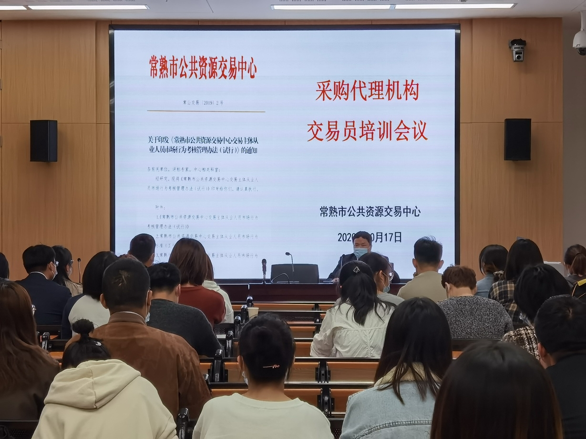

【信息发布时间：2020-10-19阅读次数：】 【我要打印】 【关闭】
10月17日，市公共资源交易中心利用“常熟公共资源”手机APP，组织相关代理机构40多名从业人员参加了一场特殊的培训和考试。
2019年，市公共资源交易中心研究制定了《交易主体从业人员市场行为考核管理办法（试行）》，建立了招标代理交易员制度和从业人员评价考核制度。前期已经开展了3期培训，参加人数达到了700余人。此次培训是新进代理人员的业务培训，上午分别由中心工作人员，针对工程交易、采购交易开评标操作流程，具体的考核细则以及开评标各系统的具体操作等内容，进行了详细的讲解，具有很强的实操性。现场培训结束后，各培训人员利用之前录入交易系统时自动生成的账号密码，在手机上登陆“常熟公共资源”手机APP，进行在线考试。相关题库由交易中心针对开评标流程和系统操作以及相关法律法规自行拟定，具有很强的针对性，考试题目在题库中自动生成，并自动阅卷，考试合格即核发交易员证。
我市公共资源交易通过建立这两项制度，促进了各交易主体加强内部人员管理，提升人员业务素质，极大减少了各阶段业务错误发生率，进一步改善了开评标秩序和纪律，公共资源各项制度得到有效执行，市场整体服务质量和交易效率得到进一步提升。这项“交易主体从业人员考核评价机制”，在2019年度全国公共资源交易评选活动中被评为“全国公共资源交易创新举措奖”。2020年1-3季度，虽有新冠疫情的肆虐，但是我市公共资源完成交易1545宗，实现交易额361.58亿元，同比分别增长9.9%和55.9%，位列苏州各县（区）市第一位。
另悉，“常熟公共资源”手机APP项目，共分为三期，依次完成在线考试、在线审批、动态考核、统计分析等6个子系统。目标是在完成公共资源全流程电子化和全流程不见面交易的同时，将公共资源交易系统的部分功能移至手机端，逐步朝着智能化的方向，为各方市场主体提供更加方便、高效、便捷的管理和服务。
